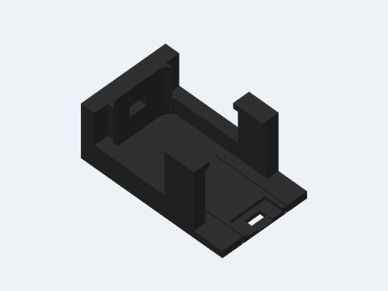

TT 馬達座（參數化重建）
TT Motor Cradle, Parametric Rebuild
原設計：Jim Larsen「20 to 1 Reduction Gear for the Bambu TT Motor」（MakerWorld，Standard Digital File License）。本頁只提供重建後的參數化模型。
把 Jim Larsen 減速器底座裡的 TT 馬達座量測出來，用 FreeCAD 參數化重建，拿掉減速齒輪塔，成為後續 Technic 系列的共同核心。
tt_motor_adapter_basic（FreeCAD 等角視圖）
重建方式
- 從原檔網格量出各部尺寸，用 FreeCAD PartDesign 的方塊、圓柱特徵重建
- 每個尺寸都綁定 Params 試算表：A 欄中文說明、B 欄數值（含自動計算的公式）
- 移除原作的兩座減速齒輪塔，只留馬達座
固定馬達的結構
- 前擋塊：擋住齒輪箱前端，方孔讓齒輪箱凸耳卡入
- 擋面兩側的內凹圓弧，貼合齒輪箱前角
- 側牆卡扣柱與往內的唇，壓住馬達
- 底板彈片：兩道切縫、末端薄區、方窗與斜面，馬達滑到底時彈起扣住
檔案下載
| 預覽 | 類型 | 說明／下載 | 大小 |
|---|---|---|---|
| FCStd | FreeCAD 參數化模型 tt_motor_adapter_basic.FCStd | 248 KB |
 | 3MF | Bambu Studio 專案 tt_motor_adapter.3mf | 38 KB |
| PY | 建模腳本 build_tt_adapter.py | 1 KB | |
| PY | 共用模組：馬達座核心幾何、參數表、匯出與 GUI 重存 tt_adapter_core.py | 10 KB | |
| PY | 在 FreeCAD 介面重存檔案，寫入縮圖與顯示狀態 gui_finish.py | 2 KB |
FCStd 用 FreeCAD 1.1 開啟（參數在 Params 試算表）；3MF 可直接拖進 Bambu Studio 或其他切片軟體。